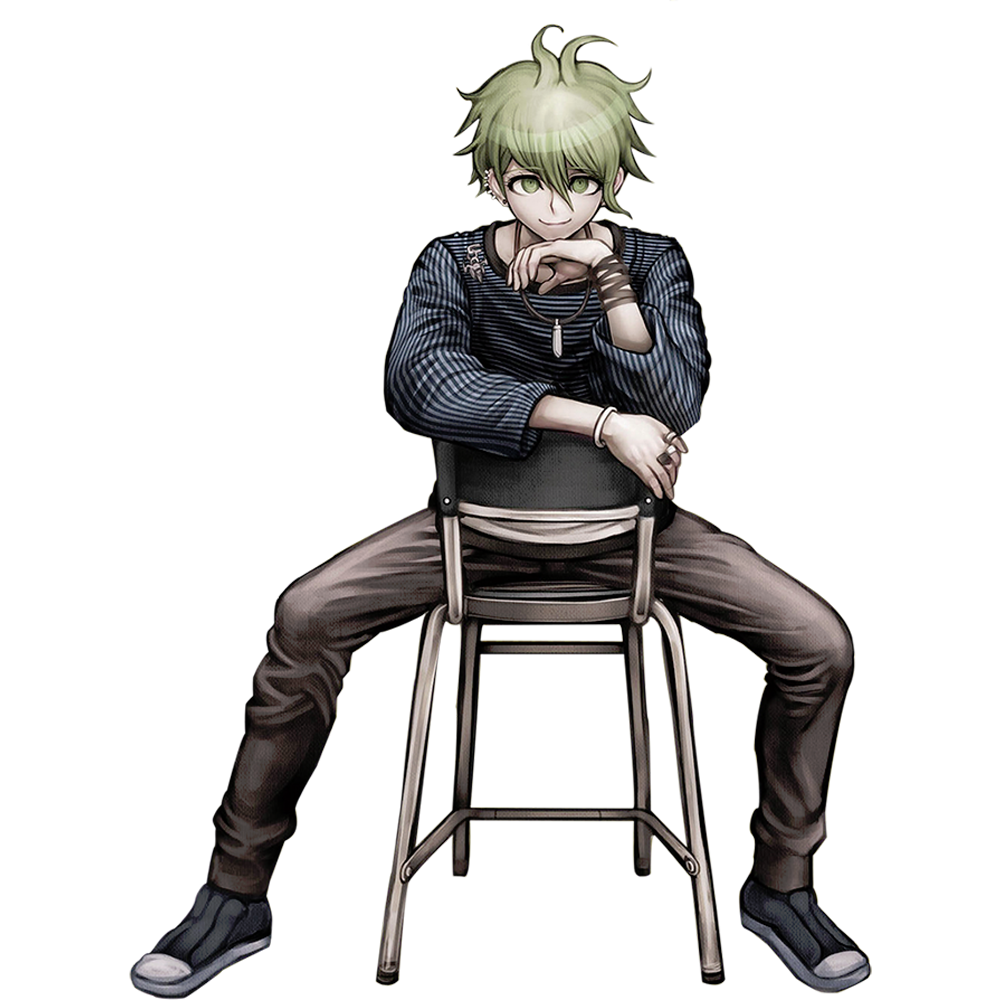

Rantaro Amami
Rantaro Amami (天海 蘭太郎) is a student in the Ultimate Academy for Gifted Juveniles and a participant of the Killing School Semester featured in Danganronpa V3: Killing Harmony. He doesn't remember his talent at the beginning of the Killing Game, so his title is the Ultimate ??? (超高校級の「???」 lit. Super High School Level ???).
